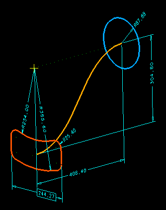

This VGx example shows the use of non-linear equations and un-knowns on both sides of the equals sign.
Model file :- VGx_vignettes.mf*



Tech Tips
Don't drag the circle dimension on an SGI as the white echos for some of the curves get projectd to the circle plane.